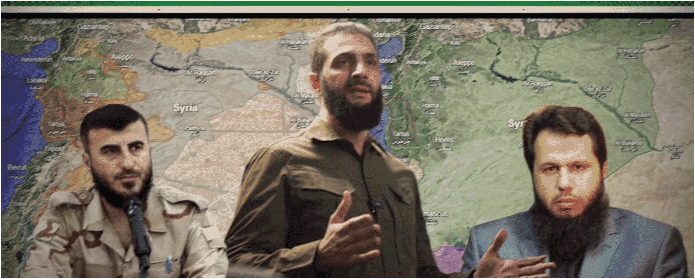
On December 8, 2024, one of the most cruel, abhorrent, and vile regimes in the world, the one of Bashar al-Assad  in Syria, fell to overwhelming pressure from several rebel groups. But the strongest, most organized, and strangely, most well behaved, was Hay’at Tahrir al-Sham
in Syria, fell to overwhelming pressure from several rebel groups. But the strongest, most organized, and strangely, most well behaved, was Hay’at Tahrir al-Sham
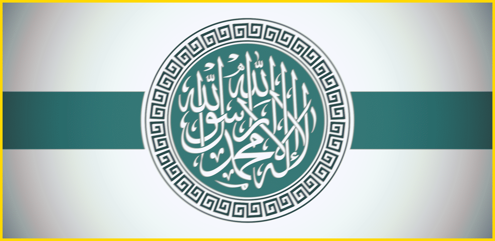
, or the Organization for the Liberation of the Levant (Syria), led by professional guerilla Ahmed al-Sharaa, commonly known by his nom de guerre, Abu Muhammad al-Jawlani.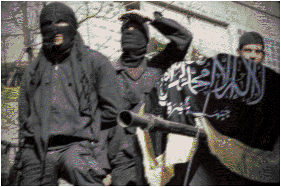
Fig 1. AL-NUSRA FRONT FIGHTERS HOLD A PARADE IN CONTROLLED TERRITORIES AND CALL FOR SHARIAH LAW c. OCTOBER OF 2013
Al-Jawlani is a man with a long and troubled history. He started his career of jihad when he entered Iraq
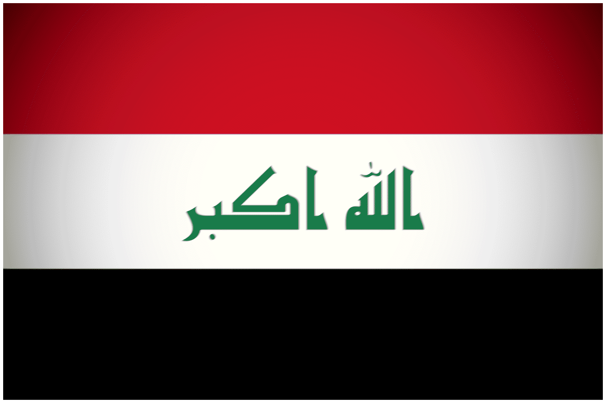
from Syria following the invasion by the United States . He joined al-Qaeda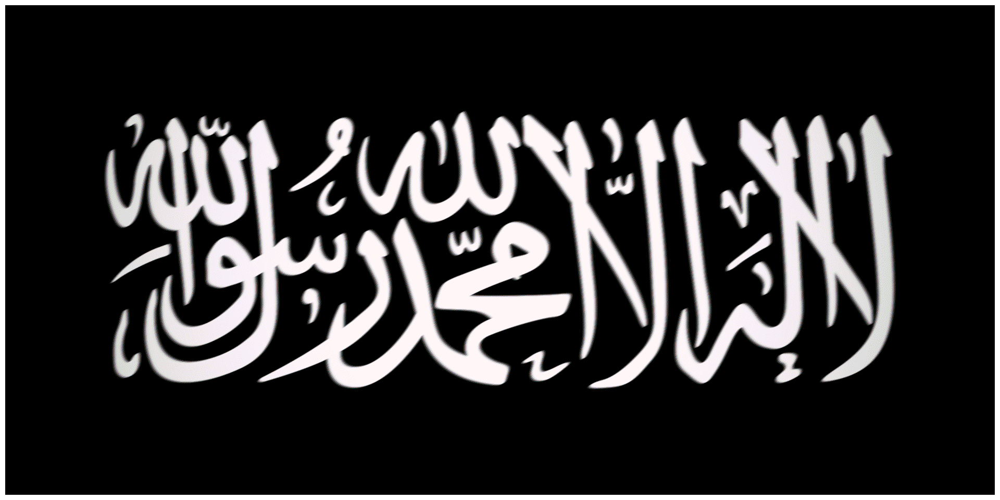
and would soon form the group’s Syrian branch when the rebellion there started in 2011. The branch, known as Jabhat al-Nusra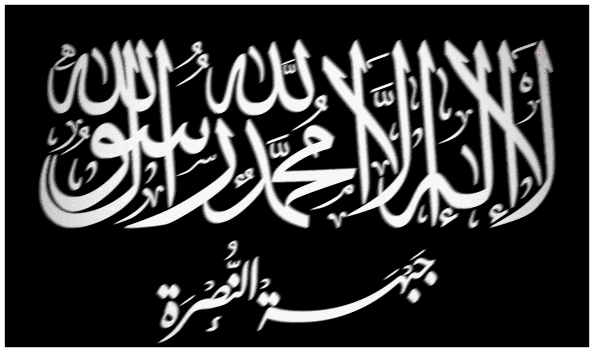
, led the rebellion as one of its most well funded, best armed, and most professional armed groups. They would be the spearhead of the revolution, leading the captures of Ar-Raqqa and Idlib, both provincial capitals, in 2013 and 2015 respectively. The latter became the unofficial headquarters for Jawlani, al-Nusra , and its successor groups.. However, the group was extremely controversial for fairly crystal clear reasons. As an al-Qaeda affiliate, the group was sanctioned by the UN and nearly all countries in the world. They were the subject of continuous American and Russian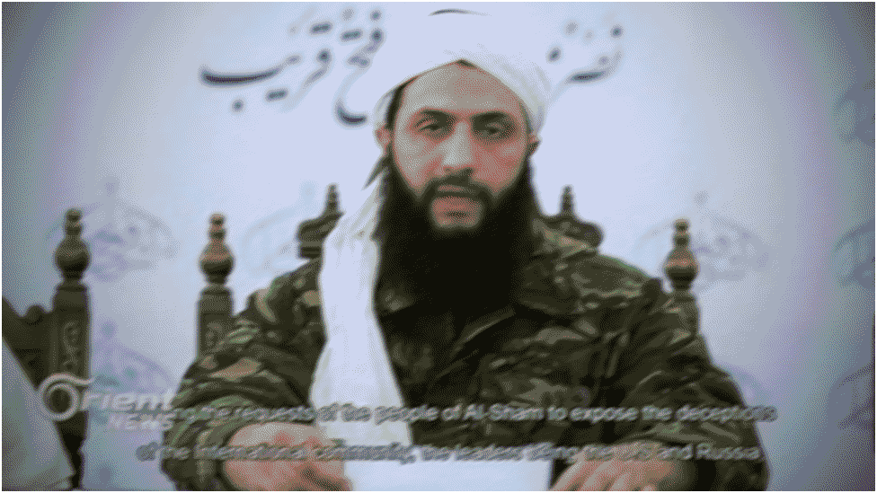
Fig 1. ABU MUHAMMAD AL-JAWLANI ANNOUNCES HIS GROUP'S SPLIT FROM AL-QAEDA c. JULY of 2016
Knowing all of this, how can someone who was designated a most wanted person by the US shake hands with their leaders and military officials only a few years later? This turn began somewhere around 2016, when Jawlani ceased all links to “foreign organizations”, widely believed to be al-Qaeda . One year later, he merged his group and numerous other Islamist groups to create Hay’at Tahrir al-Sham . Over time, HTS became a revolutionary nationalist organization, but kept its Islamist spin, separating it from “secular” and often undisciplined coalitions such as the SNA  and kept the thousands of foreign fighters with them. They began to fly normal Syrian revolutionary flags and positioned their struggle as a mix between Jihad and national revolution. Significantly, they began to centralize control of the Idlib pocket. They subjugated enraged jihadist groups part of the Fathbito operations room, destroyed al-Qaeda affiliate Hurras ad-Deen
and kept the thousands of foreign fighters with them. They began to fly normal Syrian revolutionary flags and positioned their struggle as a mix between Jihad and national revolution. Significantly, they began to centralize control of the Idlib pocket. They subjugated enraged jihadist groups part of the Fathbito operations room, destroyed al-Qaeda affiliate Hurras ad-Deen
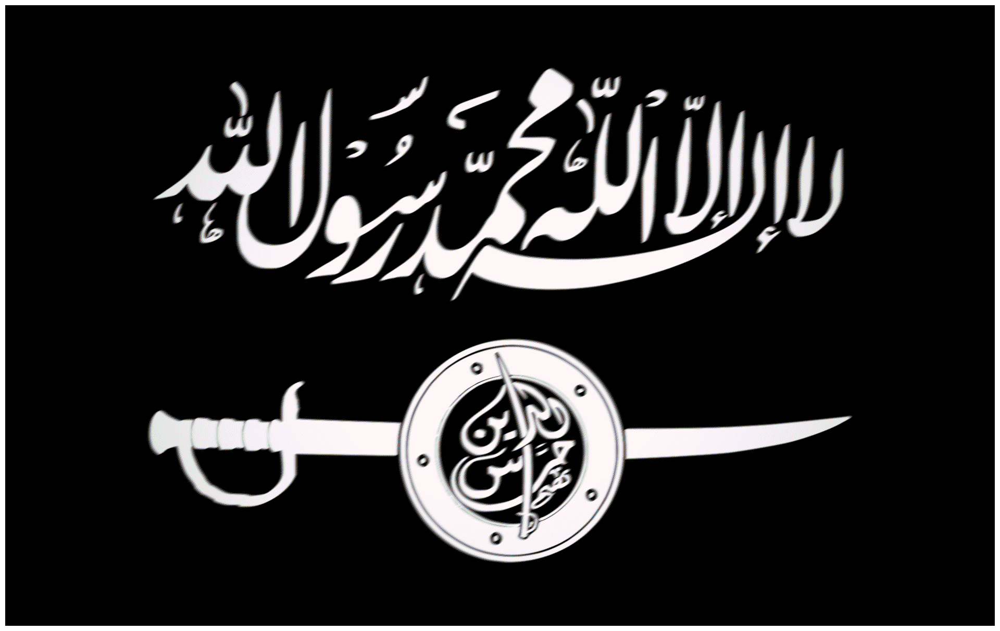
, and made the National Front for Liberation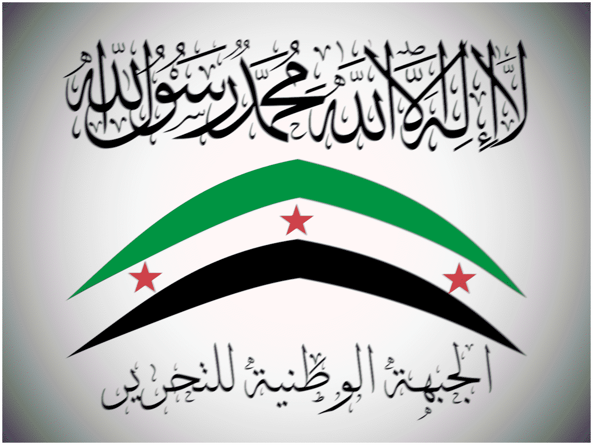
, a coalition of former Free Syrian Army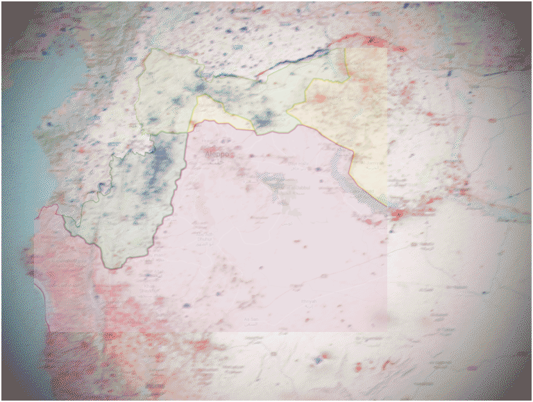
Fig 1. MAP OF THE TREND OF LIGHT INTENSITY FROM MAPPER NATHAN RUSER, WITH BLUE SHOWING INCREASES AND RED SHOWING DECREASES. IT IS OVERLAYED BY A CONTROL MAP FOR EASIER READING.
In 2020, HTS and its Fath al-Mubeen
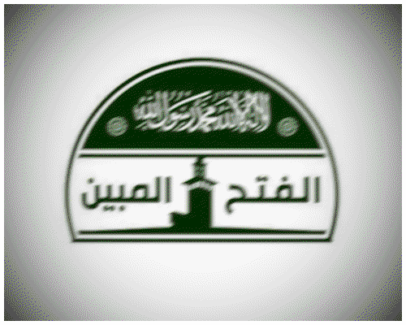
Operations Room was forced to follow a ceasefire arbitrated by Russia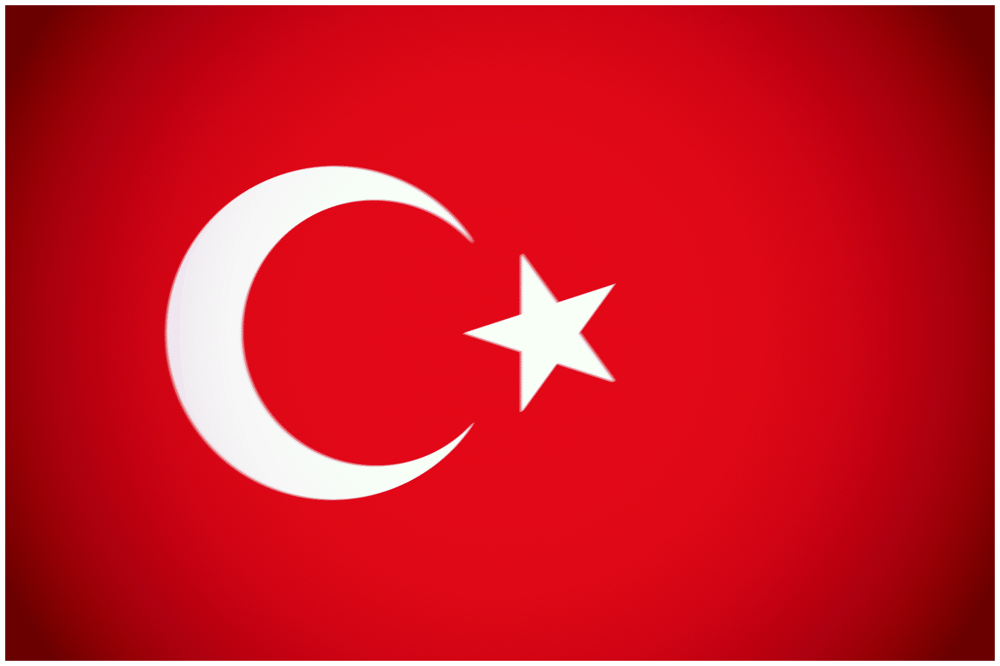
after major territorial losses to the regime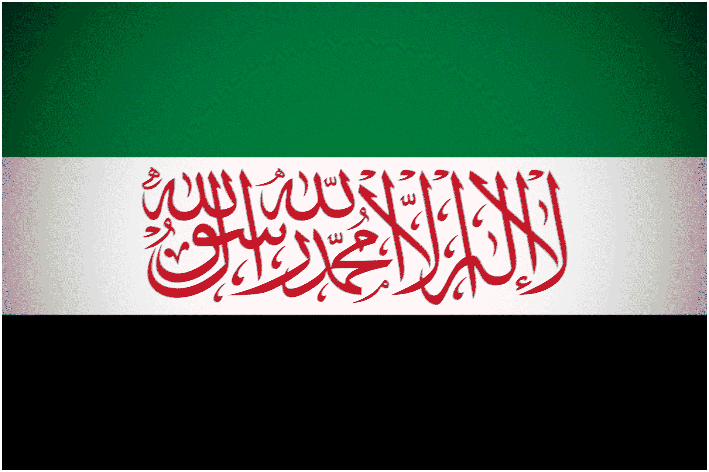
, began to experiment with governance. The SSG was also far more technocratic in its structure compared to the Assad regime
Despite this, the SSG remained authoritarian, rigid, and at times, aggravated the people of Idlib to such a point they compared al-Jawlani to al-Assad  . Throughout early to late 2024 protests rocked HTS controlled Idlib governorate following allegations of torture and deaths of fellow Syrian revolutionaries from civil society or from other armed groups. Initially, the SSG worked to alleviate those concerns, however, as the unrest continued to grow into unprecedented territory, they became far more prone to beating down and assaulting protesters.
. Throughout early to late 2024 protests rocked HTS controlled Idlib governorate following allegations of torture and deaths of fellow Syrian revolutionaries from civil society or from other armed groups. Initially, the SSG worked to alleviate those concerns, however, as the unrest continued to grow into unprecedented territory, they became far more prone to beating down and assaulting protesters.

Fig 1. "RED BANDS" HTS SPECIAL FORCES GETTING READY FOR A RAID IN LATAKIA GOVERNORATE c. FEBRUARY OF 2023
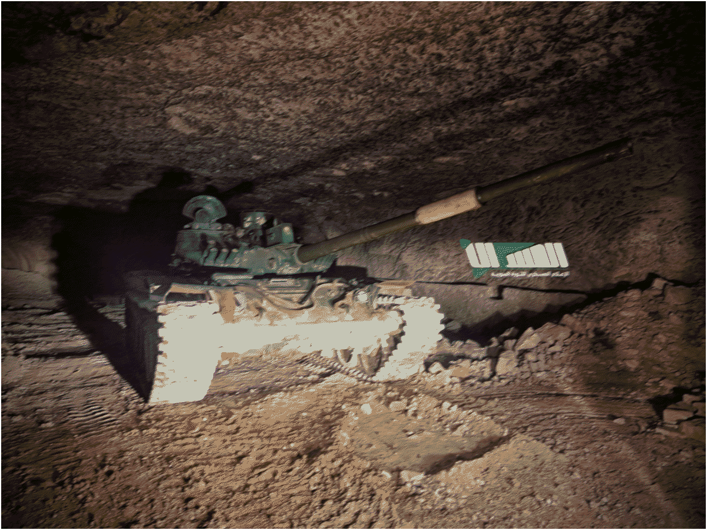
Fig 1. HTS FIGHTERS CAPTURE A REGIME T-72 TANK AND HOLD IT IN A TUNNEL COMPLEX LATER USED DURING OPERATION DETERRENCE OF AGGRESSION c. MARCH OF 2024
In those four years, HTS was transformed dramatically in terms of fighting prowess. In 2022, the HTS /SSG government opened up a military college in Idlib governorate, a meaningful step to professionalization. The group kept up their inghisami infiltrations across the Idlib frontline, intensifying post-2023, building tunnels and underground locations, and still held SVBIEDs on standby. In a new innovation, inspired (maybe even helped) by the Armed Forces of Ukraine  , HTS established Kataib al-Shaheen, or the Falcon Brigades, a drone warfare detachment, made mostly from the foundries of the Idlib pocket. During and after the ceasefire period, they conducted both reconnaissance and strikes on both hard and soft targets, including military parades, Armored Vehicles like T-72s, and regime
, HTS established Kataib al-Shaheen, or the Falcon Brigades, a drone warfare detachment, made mostly from the foundries of the Idlib pocket. During and after the ceasefire period, they conducted both reconnaissance and strikes on both hard and soft targets, including military parades, Armored Vehicles like T-72s, and regime  officers.
officers.
On the dawn of November 27, 2024, HTS fighters made their Fajr prayers and loaded into their trucks, preparing for the final battle against Assad - codenamed Operation Deterrence of Aggression. In only 12 tumultuous days, the HTS , SDF
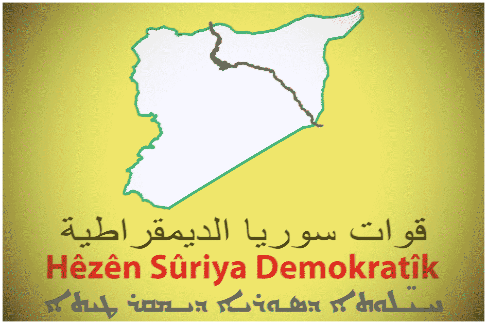
, SNA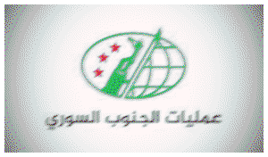
, ended a cruel regime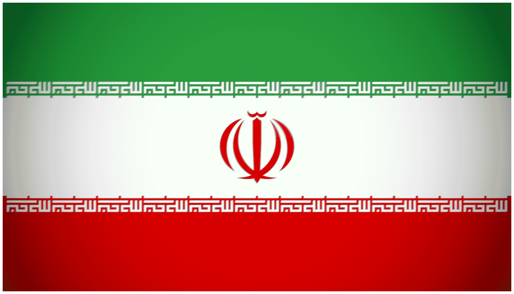
, Moscow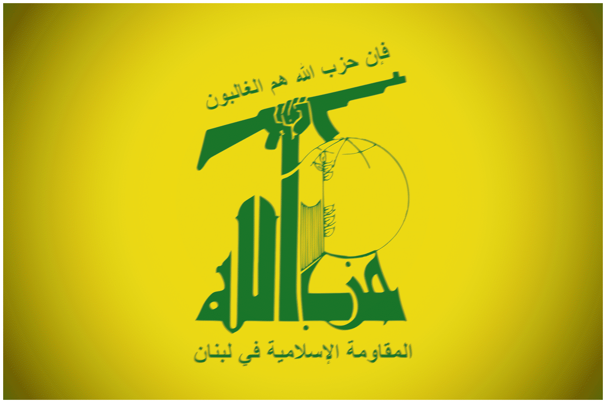
, all while remaining on designated terror lists across the globe.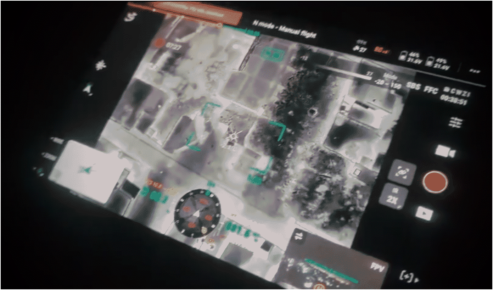
Fig 1. HTS SHAHEEN DRONE FORCES BOMBARD REGIME POSITIONS IN HAMA GOVERNORATE c. DECEMBER OF 2024
However, Jawlani’s shift was not the first such attempt in Syria. In fact, two other formerly prominent Islamist and salafist groups tried to pull off something similar.
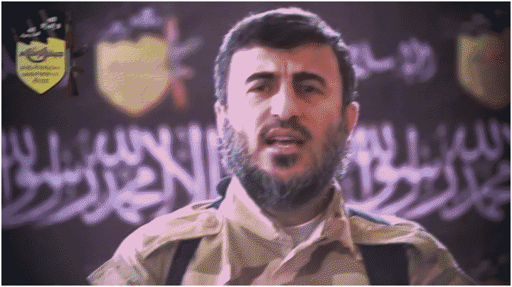
Fig 1. JAYSH AL-ISLAM LEADER ZAHRAN ALLOUSH
Shortly before Jawlani’s dissolution of Jabhat al-Nusra and the Russian  intervention in Syria, a large, bearded man presided over his outpost of Shariah and the Deen just west of Damascus in suburbs collectively called “Eastern Ghouta”. His name was Zahran Alloush, the leader of Jaysh al-Islam
intervention in Syria, a large, bearded man presided over his outpost of Shariah and the Deen just west of Damascus in suburbs collectively called “Eastern Ghouta”. His name was Zahran Alloush, the leader of Jaysh al-Islam
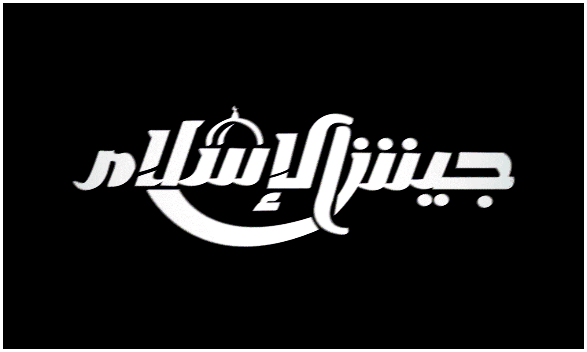
, a Salafist militant group in control of most of the rebel pocket.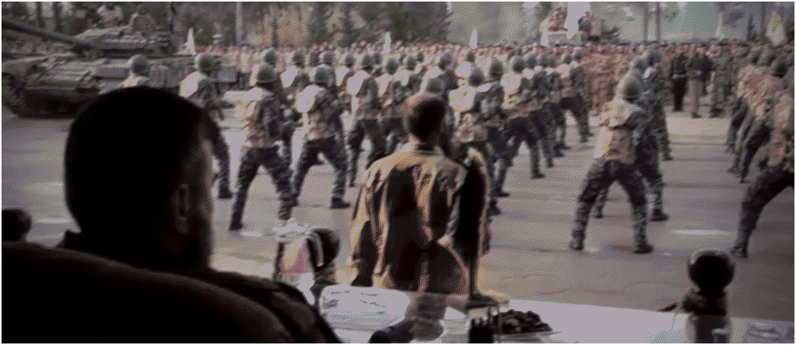
Fig 1. ZAHRAN ALLOUSH OVERLOOKS A JAYSH AL-ISLAM REBEL MILITARY PARADE c. 2015
Zahran Alloush did his best to centralize control in Eastern Ghouta under his Jaysh al-Islam . His group regularly arrested and imprisoned people without trial, torturing them in prisons under his control. He became infamous for taking out four secular opposition human rights activists in late 2013 and often went on sectarian tirades against Shias and the ruling Alawis in slick propaganda videos. In 2014 to 2015, Alloush began to centralize governance, establishing functional shariah courts, employing morality police, and unifying the military command of the rebel pocket. He also hosted military parades with armored vehicles and tanks, presenting himself as a strongman and a leader. But Alloush was also cunning and strategic. He, when interviewing American journalists, stepped away from extremist sectarian rhetoric, called Alawites part of Syria’s culture, and dissociated himself with the al-Nusra front . He started to genuinely talk about the day after plans for Syria after their supposed inevitable victory. In addition, Jaysh al-Islam received political backing, millions in funding, and perhaps even military training from the largest salafist state power: Saudi Arabia
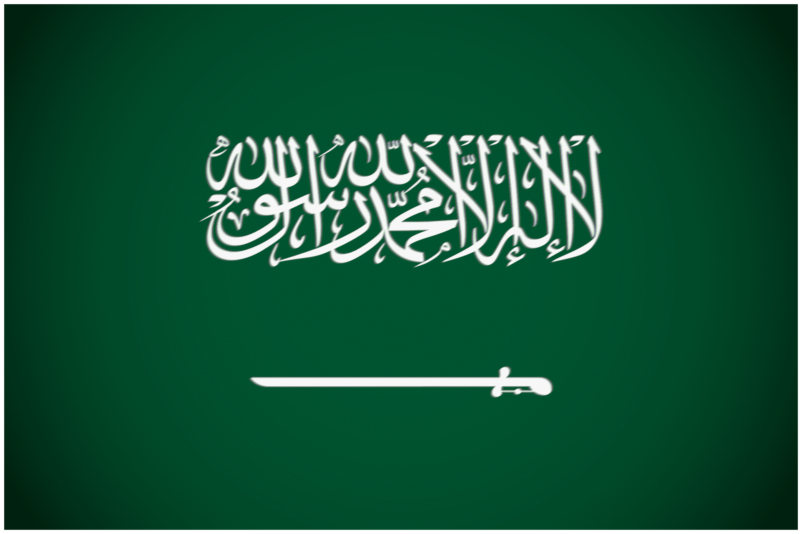
, who justified this support as building counterweights to the al-Nusra front .
Unfortunately for him, Zahran Alloush was essentially doomed from the start. For one, his group was totally and fully surrounded by the regime  in Damascus, the one city Assad
in Damascus, the one city Assad  could not afford to lose. Meaning, any attempted offensives from Jaysh al-Islam would most certainly incur a major regime
could not afford to lose. Meaning, any attempted offensives from Jaysh al-Islam would most certainly incur a major regime  response. This contrasts with the opposition in northwest Syria, who could trade minor towns with the regime
response. This contrasts with the opposition in northwest Syria, who could trade minor towns with the regime  in Hama governorate without risking total collapse. Additionally, Jaysh al-Islam was not the only group in control of parts of Eastern Ghouta. They frequently clashed with HTS and Faylaq al-Rahman
in Hama governorate without risking total collapse. Additionally, Jaysh al-Islam was not the only group in control of parts of Eastern Ghouta. They frequently clashed with HTS and Faylaq al-Rahman  fighters who prevented him from centralizing control of what was mostly his pocket.
fighters who prevented him from centralizing control of what was mostly his pocket.

Fig 1. REGIME/RUSSIAN WARPLANES HITTING JAYSH AL-ISLAM CONTROLLED DOUMA DURING THE REGIME"S FINAL OFFENSIVE c. APRIL OF 2018
After Alloush’s death, Jaysh al-Islam would never again be the same. Essam Boueidani, the group’s next leader, was unable to project the same strength as he was able to, resulting in a major fissure between Jaysh al-Islam and Faylaq al-Rahman  , leading to several inter rebel conflicts. Under Essam, the Ghouta pocket was crushed by the regime
, leading to several inter rebel conflicts. Under Essam, the Ghouta pocket was crushed by the regime  ’s Damascus Steel operation in early 2018, leading to Jaysh al-Islam’s exile to Aleppo governorate. Until the end of the regime
’s Damascus Steel operation in early 2018, leading to Jaysh al-Islam’s exile to Aleppo governorate. Until the end of the regime  in late 2024, the group would be a significant part of the Syrian National Army
in late 2024, the group would be a significant part of the Syrian National Army  , though they would never again hold the strength they had in those years.
, though they would never again hold the strength they had in those years.
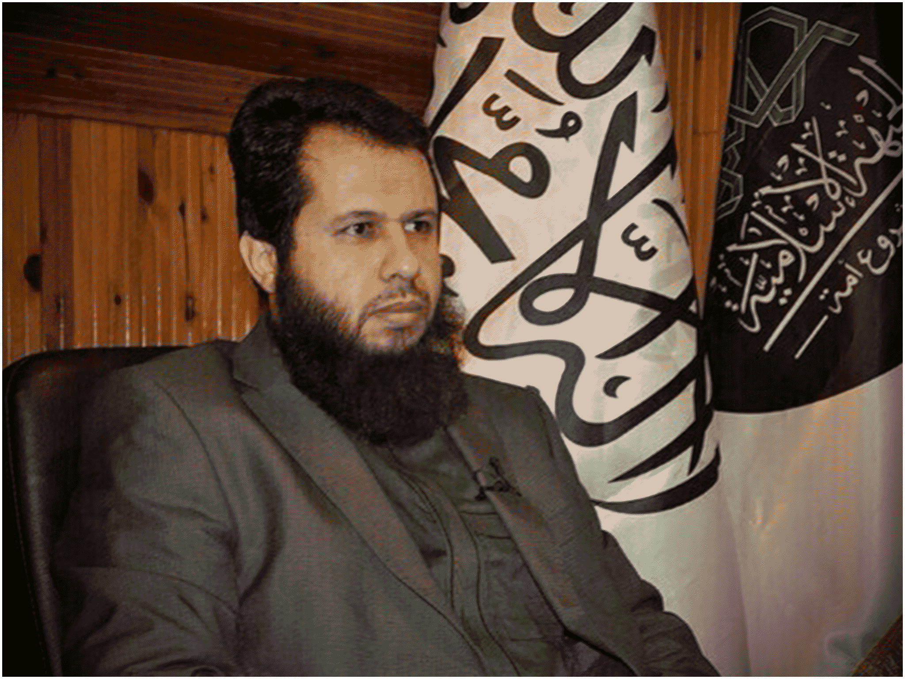
Fig 1. FORMER LEADER OF AHRAR AL-SHAM AND THE ISLAMIC FRONT, HASSAN ABBOUD
Before Zahran Alloush or Ahmed Al-Sharaa, there was Hassan Abboud, commander of Ahrar al-Sham
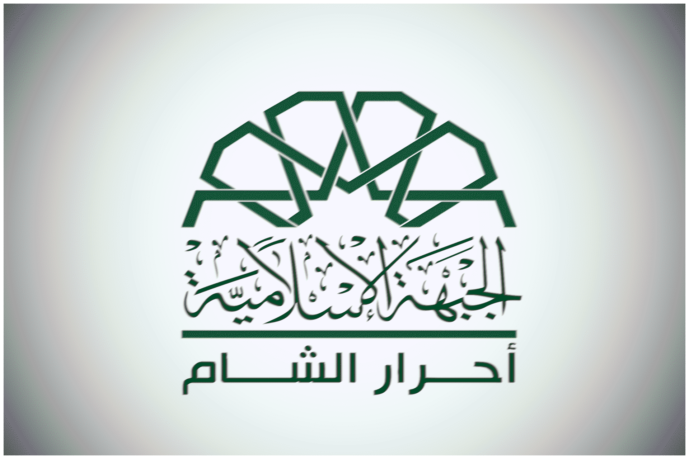
, once the largest, or one of the largest, non al-Qaeda linked Islamist groups in Syria. The group led multiple islamist coalitions throughout the years, such as the Syrian Islamic Front and the Islamic Front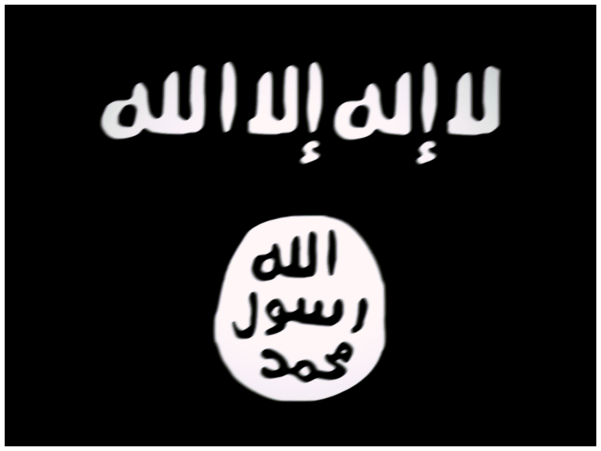
, Abboud made several overtures to the west, proclaiming that Alawites were a foundational part of the Syrian conscience, that they did not use suicide bombers, that they were readily able to accept support from the United States , that they weren’t takfiri, and that they strongly disapproved of the Islamic State for its theological and ideological doctrine, but still maintained support for instilling Shariah law in Syria. He also began to be seen next to more and more Syrian revolutionary flags. Unfortunately for him, he and the group’s cadre was killed by an Islamic State suicide bomber. Although Ahrar al-Sham remained strong for years afterward, they would never reach their earlier heights again. In January of 2019, Ahrar al-Sham , as part of the National Front for Liberation , a SNA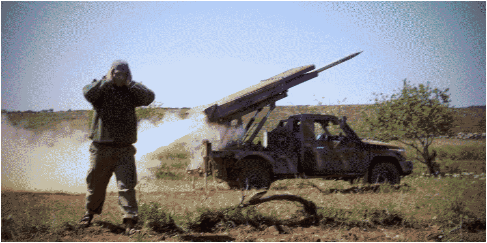
Fig 1. AHRAR AL-SHAM FIGHTERS FIRE TECHNICAL MLRS AT REGIME POSITIONS NEAR THE HAMA FRONTLINE, APRIL OF 2015
So why did he fail? He may have been too early. By the time Abboud made, or even attempted, his turn, the Syrian opposition was the most divided it would ever be. The rebels came in all shapes, sizes, and ideologies, some larger than his group, even. Abboud did not have a specific geographic center with controlled towns where his group could display how they would govern, instead fighting on multiple fronts disjointedly. In comparison, early to mid 2020s HTS , meanwhile, was successfully able to create an outpost of jihad in Idlib, becoming the most organized amongst the groups in both governance and military strength. It held Idlib's NFL suboordinate in Fath al-Mubeen and often took the time to establish their dominance over the SNA  factions. In contrast, Harakat Ahrar al-Sham did not have total control over the operations rooms they joined throughout the years. Both the Islamic Front
factions. In contrast, Harakat Ahrar al-Sham did not have total control over the operations rooms they joined throughout the years. Both the Islamic Front  and Jaysh al-Fatah
and Jaysh al-Fatah
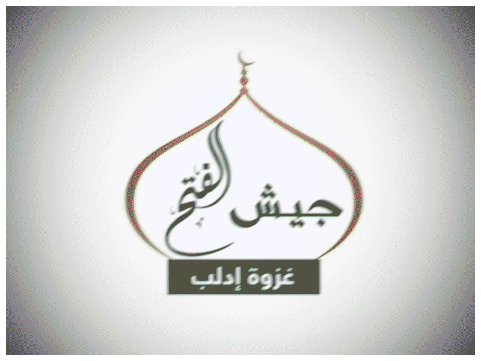
held several rebel groups, such as the al-Nusra Front , al-Tawhid Brigade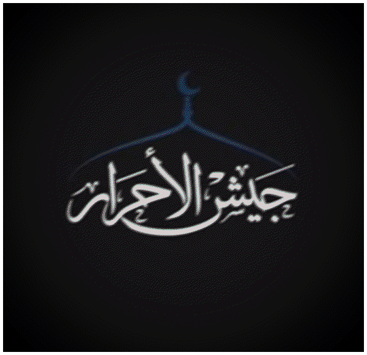
. Earlier divisions between the hardline and moderate factions simmered during Abboud's leadership but finally burst after him, causing issues for the group.
The shift from al-Jawlani to al-Shar’a was so extraordinary that numerous other jihadist groups are currently theorizing how to do the same thing. HTS was congratulated by an array of political Islamist, jihadist, and even some al-Qaeda linked groups [6]. They were cited as an inspiration by the withering Muslim Brotherhood, Hamas  , JNIM , and al-Shabaab . Even the Taliban
, JNIM , and al-Shabaab . Even the Taliban
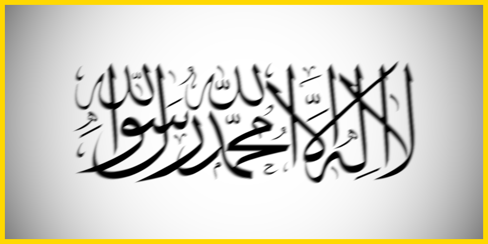
, who represent the direct opposite extreme of Sunni jihadism, congratulated them and wished Syria well. al-Shabaab . JNIM , who has currently quieted the AQ dogma during their strategic cooperation with the Tuareg rebels in Mali , also congratulated their victory. They, out of every al-Qaeda affiliate on earth, are the closest to destroying their rival governments in Mali , Niger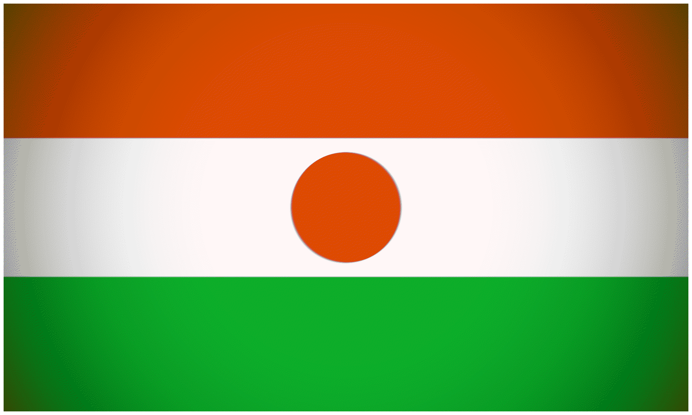
, and Burkina Faso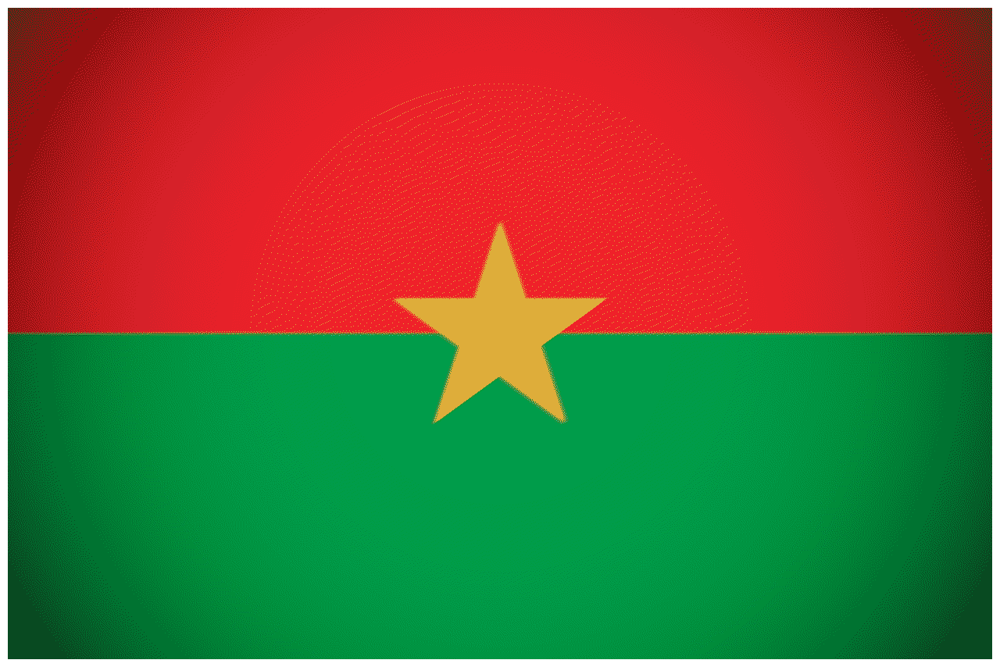
. If their victory through Jihad does come, it remains to be seen if they stay their current direction and become a Taliban in West Africa, or if they become a HTS there. Their lack of nationalism for any of those three states may dissuade them from the latter, but so too may the weakness of al-Qaeda central.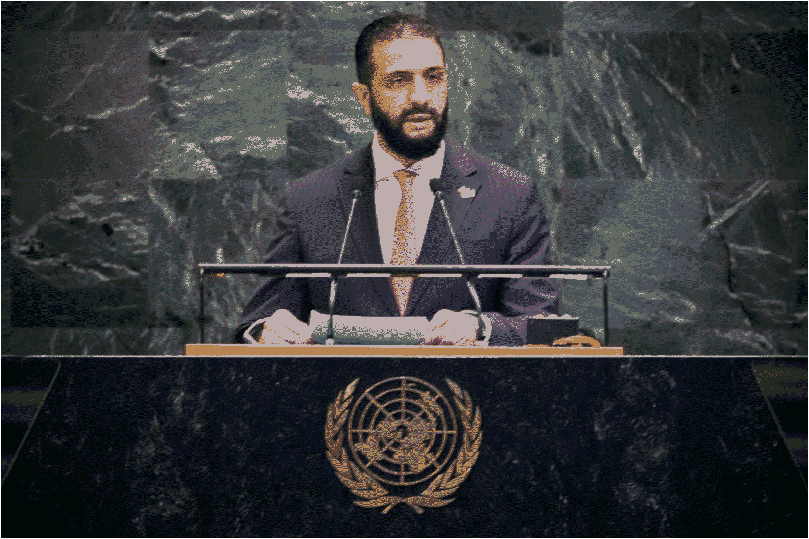
Fig 1. JAWLANI, NOW AHMED AL-SHARAA GIVING A SPEECH IN THE UN BUILDING IN NEW YORK
To conclude, those fateful days in November and December represent the most pivotal days in the history of salafi jihadism since the rise of the Islamic State . It shows groups like JNIM and al-Shabaab a new untreaded path separate from the one trampled on by the Taliban , a group running Afghanistan into ruin. In Syria  itself, Ahmed al-Sharaa has ruled, so far, pragmatically and with caution. His manuvering has brought both most of the country, even the leftist SDF , under his control, and foreign financial interests back in the country. For the first time in years, Damascus and major cities have recieved full days of electricity. Despite positive developments, Ahmed al-Sharaa has also presided over two separate sectarian massacres carried out by elements of his army and its auxiliries last year, one in Alawite areas and another in Druze areas, resulting in the deaths of hundreds of minorites. Additionaly, his country has been the target of increasing Israeli
itself, Ahmed al-Sharaa has ruled, so far, pragmatically and with caution. His manuvering has brought both most of the country, even the leftist SDF , under his control, and foreign financial interests back in the country. For the first time in years, Damascus and major cities have recieved full days of electricity. Despite positive developments, Ahmed al-Sharaa has also presided over two separate sectarian massacres carried out by elements of his army and its auxiliries last year, one in Alawite areas and another in Druze areas, resulting in the deaths of hundreds of minorites. Additionaly, his country has been the target of increasing Israeli  meddling , primarily due to their disapproval of the government's alliance with Turkey . As the word steps into the late 2020s, the future of both Syria and the global jihadist current remain tenuous, their paths finally diverging.
meddling , primarily due to their disapproval of the government's alliance with Turkey . As the word steps into the late 2020s, the future of both Syria and the global jihadist current remain tenuous, their paths finally diverging.
• 1. Lund, Aron. “The Syrian Rebel Who Tried to Build an Islamist Paradise” Politico Magazine, Politico, 31 Mar. 2017, www.politico.com/magazine/story/2017/03/the-syrian-rebel-who-built-an-islamic-paradise-214969/
• 2. Lund, Aron. “Into the Tunnels” Century International, The Century Foundation, 21 Dec. 2016, tcf.org/content/report/into-the-tunnels/
• 3. al-Dimashqi, Youmna. “Iron Rule: Jaish al-Islam in Eastern Ghouta” Syria Deeply, The New Humanitarian, 22 Mar. 2016, deeply.thenewhumanitarian.org/syria/articles/2016/03/22/iron-rule-jaish-al-islam-in-eastern-ghouta
• 4. Drevon, Jerome, and Patrick Haenni. European University Institute, 2021, How Global Jihad Relocalises and Where It Leads. The Case of HTS, the Former AQ Franchise in Syria, https://cadmus.eui.eu/server/api/core/bitstreams/2b985c00-6254-51ee-8de4-7743c1897608/content
• 5. Ruser, Nathan. “Look towards the Light: Unpacking the Syrian Regime’s Retreat.” Geospatial Digest, Substack, 10 Dec. 2024, https://geospatialdigest.substack.com/p/look-towards-the-light-unpacking
• 6. Burke, Jason. “Islamist Groups from across the World Congratulate HTS on Victory in Syria.” The Guardian, Guardian News and Media, 11 Dec. 2024, www.theguardian.com/world/2024/dec/11/islamist-groups-from-across-the-world-congratulate-hts-on-victory-in-syria
• 7. “Between Reformist Discourse and Actual Repression: How Hay’at Tahrir al-Sham Handled Idlib Protests.” Syrians for Truth and Justice, 2 Oct. 2024, stj-sy.org/en/between-reformist-discourse-and-actual-repression-how-hayat-tahrir-al-sham-handled-idlib-protests/
• 8. McDonald, Broderick. “The Drones of Hayat Tahrir Al-Sham: The Development and Use of UAS in Syria.” Global Network on Extremism and Technology, 20 Dec. 2024, gnet-research.org/2024/12/20/the-drones-of-hayat-tahrir-al-sham-the-development-and-use-of-uas-in-syria/
• 9. “Defiant Syrian Rebels Offer Stark Choice.” BBC News, BBC, 3 June 2014, www.bbc.com/news/world-middle-east-27687018
• 10. Black, Ian. “Syria Crisis: Saudi Arabia to Spend Millions to Train New Rebel Force.” The Guardian, Guardian News and Media, 7 Nov. 2013, www.theguardian.com/world/2013/nov/07/syria-crisis-saudi-arabia-spend-millions-new-rebel-force